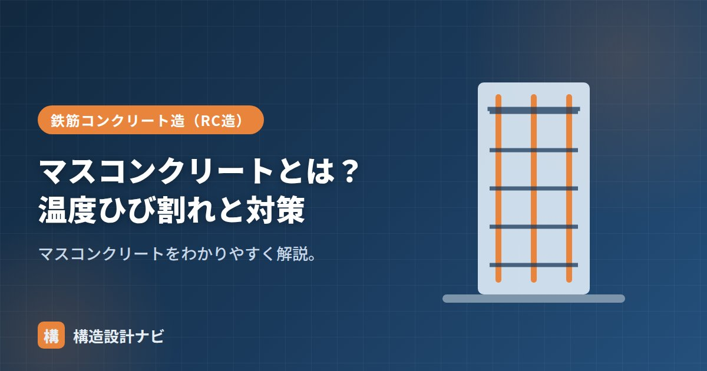

マスコンクリートとは？温度ひび割れと対策

マスコンクリート（英語：mass concrete）とは、断面が大きく、セメントの水和熱による温度上昇で温度ひび割れのおそれがあるため、施工計画の段階から特別な配慮が必要なコンクリートのことです。大型の基礎スラブ・厚い壁・大断面の柱梁などが該当し、一般の住宅程度の部材ではあまり問題になりませんが、大規模建築物や土木構造物では重要な検討項目になります。
- マスコンクリートは断面が大きく、水和熱による温度ひび割れの検討が必要なコンクリート。
- 内部と表面の温度差、収縮の拘束によって温度ひび割れが生じる。
- 低発熱セメント・打込み温度管理・パイプクーリングなどで発熱と温度差を抑える。
JASS5での定義
JASS5では、部材断面が大きく、水和熱による温度応力やひび割れの検討が必要なコンクリートをマスコンクリートとしています。目安として、厚さの大きい壁状・マット状（基礎スラブ）部材などが該当します（例：壁状で厚さ80cm以上、下端拘束のマット状で厚さ100cm以上 など）。一般の柱・梁・スラブでは断面が比較的小さく熱が逃げやすいため、通常はマスコンクリートとしての特別な検討は不要です。
内部温度上昇の仕組み
セメントは水と反応（水和）するとき熱を出します。断面が大きいと熱が逃げにくく、内部の温度が大きく上昇します。一方、表面は外気で冷えるため、内部と表面に温度差が生じます。この現象はセメントの硬化過程で必ず起こるものですが、断面が小さければ熱がすぐ外部に逃げるため問題になりにくく、断面が大きいマスコンクリートで顕著になります。
温度ひび割れ
温度差や、冷えるときの収縮が周囲に拘束されることで温度応力が生じ、引張に弱いコンクリートが割れます。これが温度ひび割れです。打込み後、数日〜数週間で発生します。ひび割れには、部材内部と表面の温度差による「内部拘束によるひび割れ」と、既に硬化した部材や地盤などに拘束されて生じる「外部拘束によるひび割れ」の2種類があり、対策の考え方も異なります。
対策
- 低発熱セメント：中庸熱・低熱ポルトランドセメントで発熱を抑える。
- 打込み温度の管理：材料を冷やし初期温度を下げる。
- パイプクーリング：内部に通した管に水を流して冷やす。
- ひび割れ誘発目地：ひび割れ位置をあらかじめ誘導する。
- 打込み区画の分割・養生で温度差を抑える。
実際の現場では、これらの対策を単独で使うのではなく、事前に温度応力解析を行って必要な対策の組み合わせを決めることが一般的です。打込み後は温度計を埋め込んで内部温度を継続的に計測し、想定どおりに温度が推移しているかを確認する「温度管理」も重要な工程です。
よくある質問
Q1. 温度ひび割れは構造上どのくらい問題になりますか？
ひび割れの幅や深さによっては、鉄筋の腐食や水密性の低下につながるおそれがあるため、放置してよいものではありません。ひび割れ誘発目地などであらかじめ発生位置をコントロールし、必要に応じて補修（樹脂注入など）を行います。
Q2. 夏と冬で対策は変わりますか？
変わります。夏は外気温が高く水和熱による温度上昇がさらに大きくなりやすいため、材料の事前冷却などの対策がより重要になります。冬は逆に外気との温度差が大きくなりやすいため、保温養生で急激な冷却を防ぐことが重視されます。
ひび割れ一般は「コンクリートの弱点とひび割れ」、全体像は「コンクリートの種類7選」、基礎は「鉄筋コンクリート造とは？」をどうぞ。
大型の基礎スラブを担当するたびに、温度応力解析を省略したくなる誘惑と隣り合わせになります。断面が目安をわずかに下回るくらいの部材でも、拘束条件次第でひび割れが出た経験があるので、判断は寸法の数値だけに頼らないようにしています。
温度ひび割れが生じる仕組み（図解）
温度ひび割れの対策
| 分類 | 対策 | 効果 |
|---|---|---|
| 材料 | 低熱・中庸熱セメントの使用 | 発熱量そのものを減らす |
| 高炉・フライアッシュセメント | セメント量を置き換えて発熱を抑える | |
| 単位セメント量の低減 | 粗骨材を多く、W/Cを大きめに（強度が許す範囲で） | |
| 施工 | プレクーリング（材料の冷却） | 打込み温度を下げる |
| パイプクーリング | 内部に配管して水を通し、内部温度の上昇を抑える | |
| 打設ブロックの分割 | 1回の打込み量を減らし、拘束を小さくする | |
| 設計 | ひび割れ誘発目地 | ひび割れ位置を制御する |
| 温度ひび割れ指数による検討 | 解析でひび割れ発生確率を評価し対策を決める |
マスコンクリートの検討では、温度ひび割れ指数（コンクリートの引張強度÷発生する引張応力）を用いて評価します。この値が大きいほどひび割れにくく、目安として1.85以上でひび割れをほぼ防止、1.2以上で有害なひび割れを制限、0.7以上でひび割れの発生を許容しつつ幅を制御、といった水準が示されています。要求される水密性・耐久性に応じて目標値を設定し、対策の程度を決めます。
まとめ
- マスコンクリートは大断面で温度ひび割れの検討が必要なコンクリート（JASS5）。
- 水和熱で内部温度が上がり、内外温度差・拘束で温度ひび割れが生じる。
- 低発熱セメント・打込み温度管理・パイプクーリング・誘発目地などで対策する。
- 事前の温度応力解析と、打込み後の温度管理を組み合わせて品質を確保する。